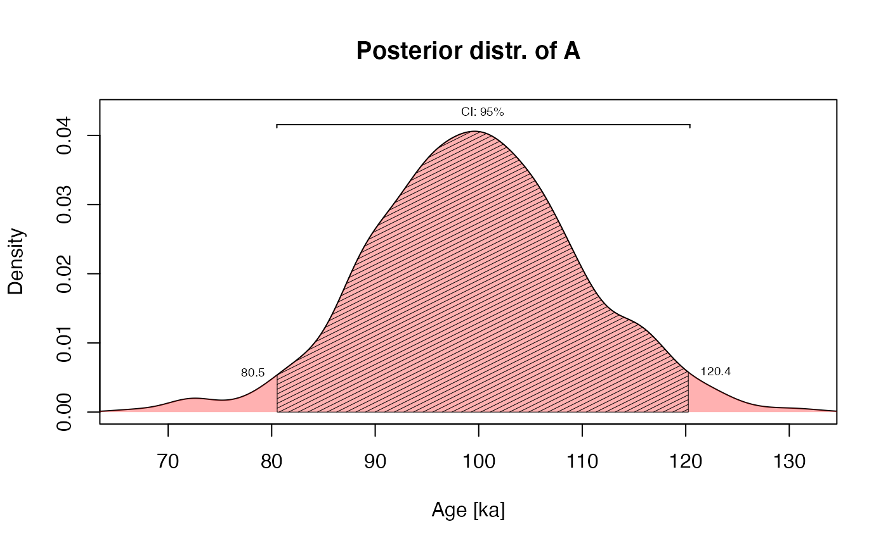

A graphical summary of the statistical inference of an OSL age
plot_OSLAgeSummary(object, level = 0.95, digits = 1L, verbose = TRUE, ...)RLum.Results, numeric (required): an object produced by combine_De_Dr. Alternatively, a numeric vector of a parameter from an MCMC process
numeric (with default): probability of shown credible interval
integer (with default): number of digits considered for the calculation
logical (with default): enable/disable additional terminal output
further arguments to modify the plot, supported: xlim, ylim, xlab, ylab,
main, lwd, lty, col, polygon_col, polygon_density, rug
A posterior distribution plot and an RLum.Resultsobject with the credible interval.
The function is called automatically by combine_De_Dr
0.1.0
Philippe, A., Galharret, J., Mercier, N., Kreutzer, S., 2022. plot_OSLAgeSummary(): Plot Posterior OSL-Age Summary. Function version 0.1.0. In: Kreutzer, S., Burow, C., Dietze, M., Fuchs, M.C., Schmidt, C., Fischer, M., Friedrich, J., Mercier, N., Philippe, A., Riedesel, S., Autzen, M., Mittelstrass, D., Gray, H.J., Galharret, J., 2022. Luminescence: Comprehensive Luminescence Dating Data Analysis. R package version 0.9.18. https://CRAN.R-project.org/package=Luminescence
##generate random data
set.seed(1234)
object <- rnorm(1000, 100, 10)
plot_OSLAgeSummary(object)
#>
#> [plot_OSLAgeSummary()]
#> Credible Interval (95 %): 80.5 : 120.4
#> Bayes estimate (posterior mean ± sd): 99.7 ± 10

#>
#> [RLum.Results-class]
#> originator: plot_OSLAgeSummary()
#> data: 3
#> .. $Estimate : numeric
#> .. $Credible_Interval : matrix
#> .. $level : numeric
#> additional info elements: 1